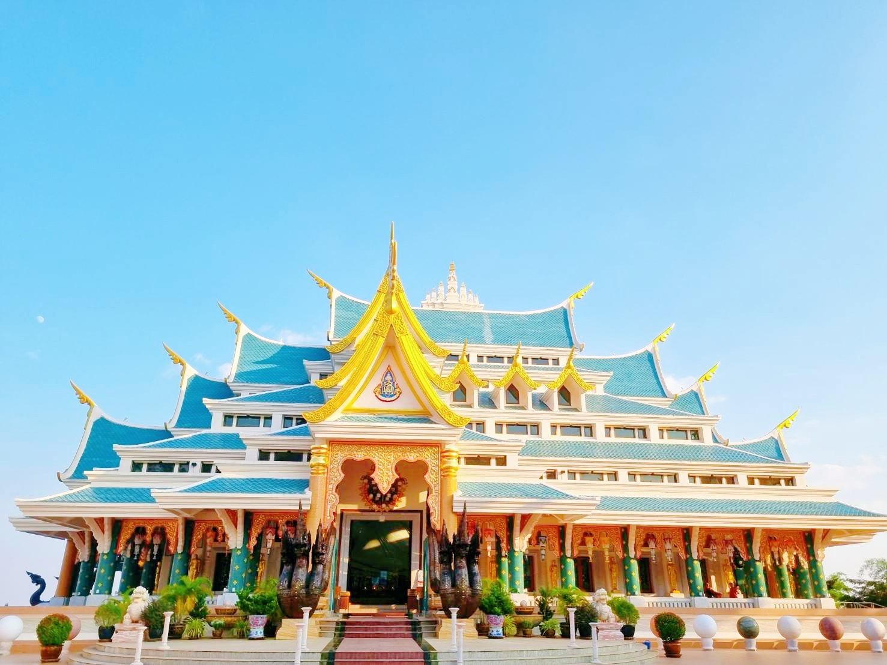
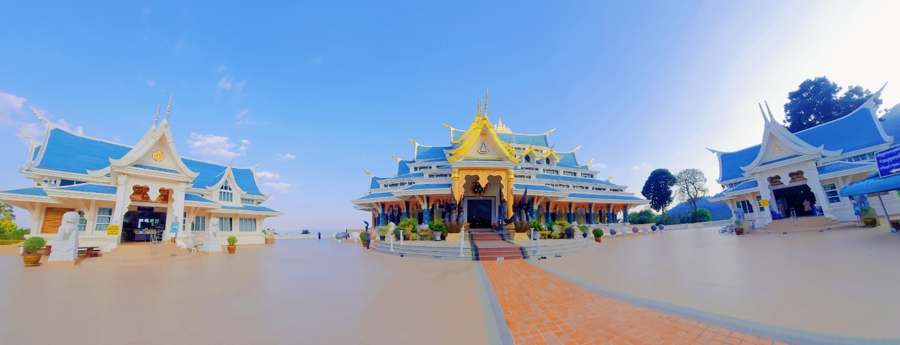
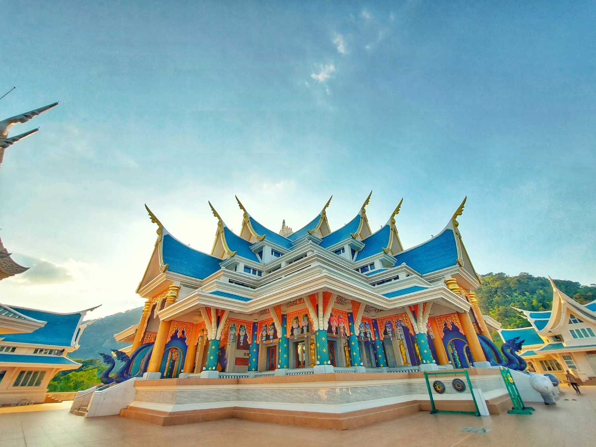

Headers examples




ยินดีต้อนรับเข้าสู่ทับทิมรีสอร์ท น้ำโสม บริการห้องพักนายวัน - รายเดือน เป็นรีสอร์ทสไตล์บ้านเรือนไทย ห้องพักสะอาด กว้างขวาง เงียบสงบ บริการเป็นกันเอง พร้อมสิ่งอำนวยความครบครัน มีที่จอดรถสะดวกสบาย ราคาประหยัด รับประกันความปลอดภัย ใกล้กับสถานที่เที่ยวที่สำคัญของจังหวัดอุดรธานี คือวัดป่าภูก้อนนั่นเอง ซึ่งหากจากรีสอร์ทประมาณสามสิบกว่า กิโลเมตร และยังอยู่ในตัวเมืองของอำเภอน้ำโสมอีกด้วย ตั้งอยู่ที่ 160 หมู่ที่ 1 ต.ศรีสำราญ อ.น้ำโสม จ.อุดรธานี 41210 สามารถโทรมาสำรองห้องพักหรือสอบถามเรื่องราคาค่าห้องพักได้ที่ โทร : 042 287 320 มือถือ : 089 274 2200 เปิดให้บริการทุกวัน บริหารงานโดย คุณตุ๋ย (นิภาภรณ์ ปรีชา)